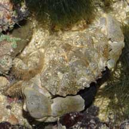
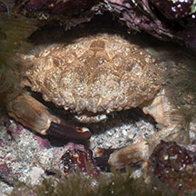
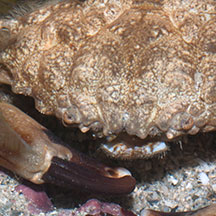

|
|
| crabs text index | photo index |
| Phylum Arthropoda > Subphylum Crustacea > Class Malacostraca > Order Decapoda > Brachyurans > Family Xanthidae |
| Rock
crab Leptodius sp.* Family Xanthidae updated Dec 2019 Where seen? This large crab with typical spoon-tipped pincers is sometimes seen in rocky or rubbly areas on our Southern shores. Features: Body width 8-10cm. Body oval, rather flat, with 4-5 blunt teeth on the edges of the shell. Colours and patterns in a wide variety; basically brown or grey, sometimes with dark patches or mottled. Pincers not very long, somewhat squat with bumps on the 'elbows' and black spoon-shaped tips. These are probably used to scrape off algae. The walking legs are fringed with long hairs and end in pointed tips. Sometimes confused with Smooth spooner crab (Etisus laevimanus) which have pincers that are longer, more slender and smooth (without bumps). |
 Pincers with bumpy elbows. St. John's Island, Sep 09 |
 Sentosa, Sep 04 |
 |
| Rock crabs on Singapore shores |
On wildsingapore
flickr
|
| Other sightings on Singapore shores |
| Acknowledgements With grateful thanks to Ondrej Radosta for identifying the species of the crabs on this page. Links
|